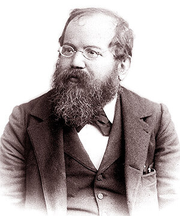

Пантеон Шахових Геніїв
„Я не історик шахів, я сам шматок шахової історії, повз який ніхто не пройде.“
©Вільгельм Стейніц

Вільгельм Стейніц
Від Стейніца до Ботвинника
Цей період ознаменував перехід від аматорських "романтичних" шахів до суворої наукової дисципліни. Був офіційно заснований титул Чемпіона Світу.
- Вільгельм Стейніц (1836–1900) Перший офіційний Чемпіон Світу (1886–1894). Він зробив революцію, проголосивши принципи позиційної гри. Стейніц вчив, що атаку слід починати лише за наявності тривалої позиційної переваги. Його внесок — це "наукова" основа шахів.
- Емануель Ласкер (1868–1941) Чемпіон Світу (1894–1921). Утримував титул найдовше в історії (27 років). Ласкер був майстром шахової психології. Він міг свідомо обирати гірший, але незручний для опонента хід, використовуючи його ментальні слабкості.
- Хосе Рауль Капабланка (1888–1942) Чемпіон Світу (1921–1927). "Шахова машина" з Куби. Його стиль відзначався феноменальною технікою та простотою. Капабланка перемагав, спрощуючи позиції до ендшпілю, де його точність не знала рівних.
- Михайло Ботвинник (1911–1995) Очолив шаховий світ після Другої світової. Чемпіон Світу (1948 — 1957, 1958 — 1960, 1961 — 1963). Ботвинник ввів у шахи науковий підхід до підготовки. Його детальний аналіз суперників та дебютів став стандартом для наступних поколінь.